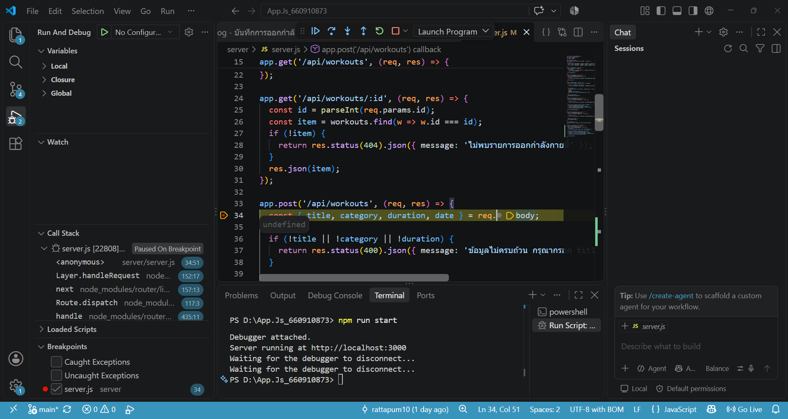
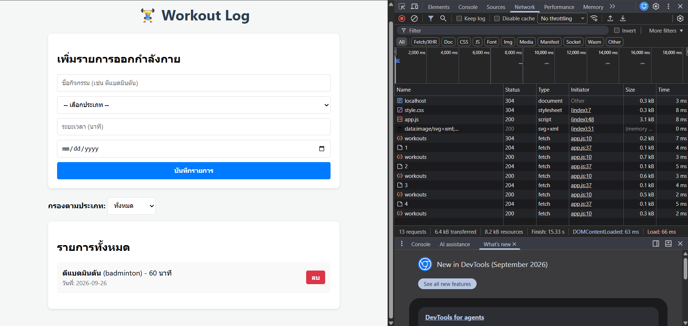

ผู้พัฒนา: รัฐภูมิ เล่าคุ้ม | รหัสนักศึกษา: 660910873
/server: พัฒนาด้วย Node.js และ Express Framework ทำหน้าที่เป็น RESTful API สำหรับประมวลผลและจัดการข้อมูล/public: ประกอบด้วย HTML, CSS และ JavaScript ฝั่งไคลเอนต์ ทำหน้าที่จัดการแสดงผล UI และรับ-ส่งข้อมูลกับเซิร์ฟเวอร์ผ่านคำขอ Asynchronous Fetch API/docs: รวบรวมเอกสารประกอบการส่งงานและภาพถ่ายหลักฐานการดีบักระบบระบบให้บริการ API สำหรับจัดการข้อมูลรายการออกกำลังกายด้วยมาตรฐาน HTTP Verbs และ JSON Data Structure ดังนี้:
| Method | Endpoint | คำอธิบาย | Request Body / Query | Status Code |
|---|---|---|---|---|
| GET | /api/workouts |
ดึงรายการออกกำลังกายทั้งหมด | Query: ?category=... (Optional) |
200 OK |
| GET | /api/workouts/:id |
ดึงข้อมูลรายการตาม ID | - | 200 OK / 404 Not Found |
| POST | /api/workouts |
เพิ่มรายการออกกำลังกายใหม่ | JSON: { title, category, duration, date } |
201 Created / 400 Bad Request |
| DELETE | /api/workouts/:id |
ลบรายการออกกำลังกายตาม ID | - | 204 No Content / 404 Not Found |
fetchWorkouts() ส่งคำขอ GET /api/workouts จากนั้นนำข้อมูล JSON มาสร้างแท็ก DOM แสดงผลบนหน้าเว็บทันทีโดยไม่มีการ Reload หน้าเว็บe.preventDefault() เพื่อป้องกันการรีเฟรชหน้าเว็บ แล้วส่งคำขอแบบ POST พร้อม JSON Body ไปยังเซิร์ฟเวอร์ เมื่อได้รับสถานะ 201 Created จะรีเซ็ตฟอร์มและดึงข้อมูลใหม่มาแสดงผลทันทีdeleteWorkout(id) เมื่อผู้ใช้ยืนยันการลบ ไคลเอนต์จะส่งคำขอ DELETE /api/workouts/:id และอัปเดตหน้าจอทันทีเมื่อลบสำเร็จภาพแสดงการตั้งจุด Breakpoint ในไฟล์ server/server.js เพื่อตรวจสอบการทำงานของ Express Request Handler และการหยุดรอตรวจสอบค่าตัวแปรระหว่างรันโปรแกรม:

ภาพแสดงตาราง Network ใน Chrome DevTools ยืนยันการส่งคำขอ POST (Status 201), GET (Status 200) และ DELETE (Status 204) สำเร็จอย่างสมบูรณ์:

แอปพลิเคชัน Workout Log ผ่านการทดสอบและตรงตามข้อกำหนดของรายวิชาทุกประการ ทั้งการจัดโครงสร้างโปรเจกต์ การสร้าง RESTful API ครบถ้วนทุกคำสั่ง การประมวลผลฝั่งไคลเอนต์แบบ Asynchronous โดยไม่ reload หน้าจอ และการบันทึกเอกสารพร้อมรูปภาพหลักฐานบน GitHub Repository เรียบร้อยแล้ว